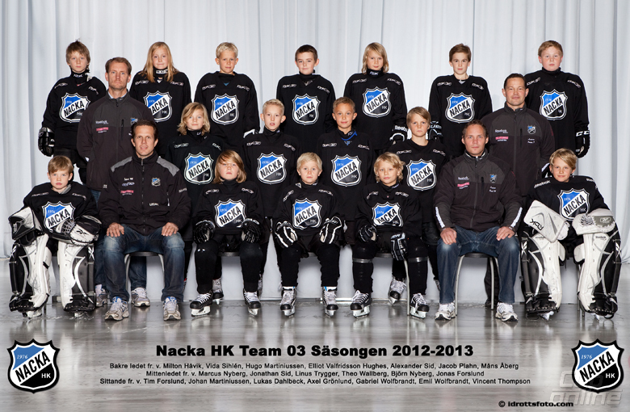

Hockey
Jag har kört Hockey I snart 12 år och varit aktiv under hela denna tid. Under dessa år har jag spelat I många olika klubbar och har haft det roligt under hela denhär tiden. De olika klubbarna Jag har spelat I är Boo HC, Nacka Hockey och Flemingsberg IK
Tillfälliga klubb, Boo HC
Välkommen till Boo Hockey, det naturliga valet för boende i närområdet som vill utvecklas som ishockeyspelare. Vår förening består av närmare 500 aktiva spelare och ca 1 000 medlemmar och grundades 1942 under namnet Boo IF! Vi är en av landets äldsta föreningar och också arrangör av Turex Cup som är landets kanske mest anrika hockeycup och som genomförts under trettonhelgen i 48 år. Vi skall erbjuda en hög kvalitativ hockeyutbildning för våra barn och ungdomar och som ger dem rätt förutsättningar att komma in på hockeygymnasiet. Vår övergripande målsättning som klubb är att bedriva en verksamhet på alla åldersnivåer som känns meningsfull, innehållsrik, utvecklande och stimulerande för alla som vill spela ishockey i Nacka kommun. Vi ska vara en organisation där alla som vill spela ishockey i Boo Hockey upp till 18-års ålder ska ha möjligheten att vara med i vår verksamhet, oavsett den individuella nivån på färdigheter och ambitioner. Vår kanske viktigaste uppgift som förening är att skapa ett livslångt intresse för ishockey hos våra spelare, pojkar såväl som flickor.Samtidigt ska vi kunna erbjuda en verksamhet för spelare som vill satsa extra mycket på sitt ishockeyspelande. Vi ska inom vår verksamhet ge spelare med en extra stark motivation och som är villiga att lägga ner en stor tid på ishockey en högkvalitativ elitutbildning. Den viktigaste hörnstenen i vår organisation är duktiga tränare. Kännetecknande för våra tränare ska vara en hög ambitionsnivå, pedagogisk skicklighet och hög kunskap inom individuell spelarutveckling. Tränarna ska brinna för sitt lag och sina spelare, men det är också viktigt att alla föreningens tränare och lagledare har en känsla för helheten i verksamheten och vad vi som Boo Hockey strävar efter. Tillsammans ska tränarna och sportchefen skapa en filosofi där formerna och metoderna ska säkerställa den sportsliga kvalitén som ska genomsyra hela verksamheten. Vår verksamhet bedrivs i huvudsak på Björknäs IP i Saltsjö-Boo där vi bland annat erbjuder hockeyprofil tillsammans med Björknäs skola årskurs 7-9, hockeyfritids två dagar i veckan, ett flertal hockeycamper och hockeyturneringar. Vi har på Björknäs IP tillgång till två isytor inomhus, gym, skottramper, löparbanor, fotbollsplan och elljuspår. Vi har alltså de bästa förutsättningarna för att bedriva såväl isträning som fysträning.
Boo hc Kalender/Boo Hc j18
Modersklubb/Nacka HK
A-laget har med undantag för säsongerna 2014/2015 och 2015/2016 spelat i Division 1 sedan 2006.[2] När serien var slut våren 2017 tvingades man spela i kvalserien och slutade trea vilket inte räckte för att få spela kvar.[3] Ett par veckor före säsongstart nekades dock Haninge Anchors HC elitlicens och efter att Mjölby HC tackat nej så erbjöds Nacka en plats i Hockeyettan även säsongen 2017/2018.[4] Efter att ha slutat sist både i fortsättningsserien och kvalserien kommer Nacka spela i Hockeytvåan säsongen 2018/2019.
